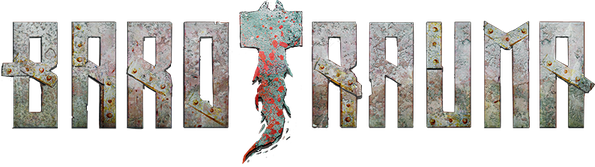
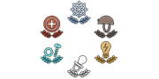
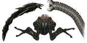
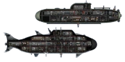
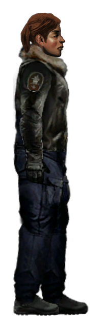
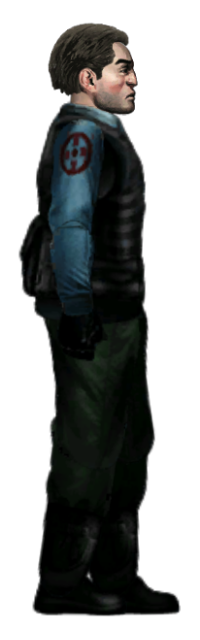
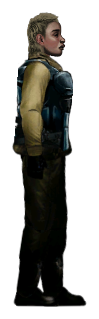
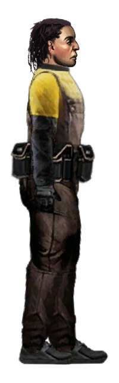
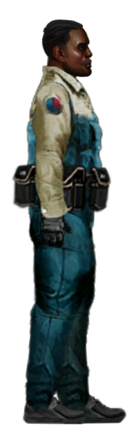
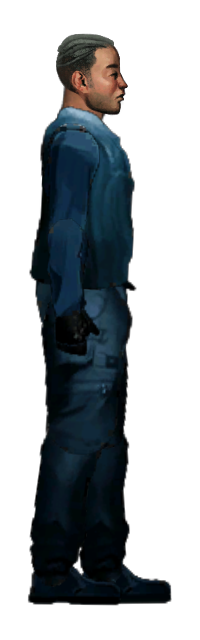

Barotrauma — это инди-игра в жанре симулятора подводной лодки, разработанная студией FakeFish и опубликованная компанией Daedalic Entertainment. Действие игры происходит на Europa, одном из лугов Юпитера, где игроки управляют подводной лодкой, исследуя глубокие океанические воды.
В Barotrauma игроки могут взять на себя различные роли — от капитана и механика до врача и кибернетика. Основная цель игры — выживание, выполнение заданий и борьба с подводными чудовищами, а также решение различных проблем, связанных с управлением лодкой и взаимодействием между игроками.
Особенностью игры является возможность кооперативного прохождения с друзьями, а также наличие элементов стратегии и управления ресурсами. Игрокам предстоит наряду с исследованием и битвами исправлять повреждения, поддерживать работу систем и обеспечивать стабильность на борту. Barotrauma также предлагает редактор модов, что позволяет игрокам создавать собственный контент и расширять игровой процесс.
Роли

Существа
Подлодки
Роли
Капитан - это лицо, ответственное за управление и командование подводной лодкой и ее экипажем. Существует требование, чтобы ровно 1 капитан был автоматически назначен на подводную лодку. Удостоверение личности капитана обеспечивает доступ в любую точку подводной лодки, за исключением личных кают экипажа. Хотя капитан больше не является обязательной должностью, эта должность по-прежнему ограничена максимум одним игроком на подлодку.

Медик - Врачи способны создавать различные лекарства с помощью Медицинского Фабрикатора, а также диагностировать и лечить множество заболеваний, которые мешают экипажу. Одна из сложнейших профессий на Европе, вы не сможете найти более двух высококвалифицированных медиков для вашей подлодки. Как правило, для облегчения работы и распределения обязанностей берут два разнонаправленных медика: Внутреннего и внешнего

Офицер службы безопасности - это лицо, ответственное за обеспечение безопасности подводной лодки от угроз, как внешних, так и внутренних. Для выполнение поставленных задач используют защитное снаряжение и имеют право взять командование экипажем на себя в случае чрезвычайной ситуации или в отсутствии Капитана, например, во время экспедиции в Инопланетные руины, но приказы Капитана, без условно, выполняются в первую очередь, если только он более не компетентен и экипаж единогласно проголосовал за признание приказов Офицера, как приказы наивысшего приоритета. СБ имеет доступ в сейф в оружейной, как и Капитан. На сегодняшний день, на Европе осталось не так много офицеров, ответственно исполняющих свои обязанности, поэтому вы не сможете найти более двух человек этой профессии для своей подлодки.

Инженер - Инженеры обладают навыками строителя и механика выше среднего, но починка сложных механических устройств по-прежнему обычно выходит за рамки их навыков, но при правильном обучении, они могут исправить это. Однако инженеры компетентны в ремонте электрических устройств, и именно к ним следует обращаться, когда электросеть начинает выходить из строя. Экипаж без них будет выглядеть, как малое дитя, играющееся с розеткой и вилкой. Также они отвечают за поддержание реактора в рабочем состоянии и обязаны сообщать капитану об оставшихся запасах топливных стержней.

Механик - обладают высокими строительными и механическими навыками. Они могут безопасно использовать Сварочные инструменты и плазменные резаки и, как правило, являются единственными, кто может починить сломанные механические устройства на начальных этапах игры.

“ Обучаясь у лучших, можно стать лучшим. „
Помощник - не имеют каких-либо конкретных обязанностей или областей знаний, но набираются опыта на 25% быстрее по всем навыкам.
Эта работа предназначена для новичков в игре, поскольку она позволяет им играть в игру, не предоставляя им важного поля для работы.
